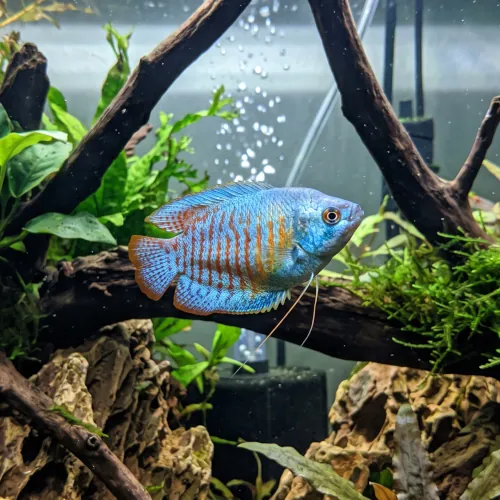

Nome popular principal
Colisa
Colisa, Colisa Lalia, Gourami Anão, Colisa Cobalto, Colisa Coral
Ficha de peixe
Anabantídeos e Labirintídeos
Um pequeno e tímido gourami anão de cores reluzentes que se destaca em aquários comunitários calmos.

Nome popular principal
Colisa, Colisa Lalia, Gourami Anão, Colisa Cobalto, Colisa Coral
Nome científico
Nome técnico essencial para taxonomia, cruzamento de manejo e referência editorial consistente.
Dificuldade de manejo
Use este nível como referência inicial, sempre considerando volume, estabilidade e compatibilidade do aquário.
Seção 1
Seção 2
Seções 4 a 6
Colisa tem hábito alimentar onívoro. Excelente. 1 a 2 vezes ao dia. Aceita facilmente rações em flocos e grânulos finos, apreciando complementos com pequenos alimentos vivos como dáfnias.
Machos possuem cores muito mais vibrantes e nadadeira dorsal mais pontiaguda; fêmeas são prateadas e ligeiramente menores. Tipo de reprodução: Ovíparo. Dificuldade de reprodução: Intermediário. O macho constrói um ninho de bolhas na superfície misturando pedaços de plantas e protege os ovos até a eclosão.
Alta. Substrato recomendado: Areia fina de rio ou cascalho escuro de granulometria fina. Necessidade de esconderijos: Média. Prospera em aquários bem plantados com plantas flutuantes para apoio ao ninho de bolhas e pouca correnteza de água.
Seção 7
Atinge em média 7 cm e vive entre 3 e 5 anos quando mantida em água limpa com filtragem suave.
Seção 8
Sim, plantas flutuantes ajudam a diminuir a iluminação e fornecem suporte para o macho construir seu ninho de bolhas.
Em aquários pequenos não é recomendado, pois os machos podem disputar território e estressar o indivíduo dominante.
Não é aconselhável, pois ambos são anabantídeos de superfície e podem disputar espaço e territorialismo.